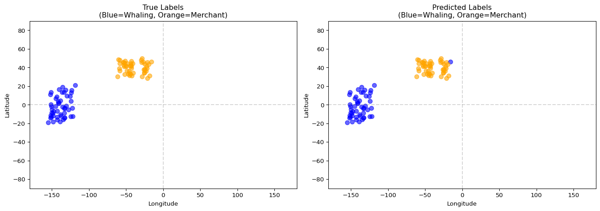

Step 4: Classifying Voyage Types with Machine Learning
Classifying Voyage Types with Machine Learning
The Maury collection contains all types of ships—merchants, whalers, naval vessels, passenger ships. To study whaling specifically, we need to identify which voyages were whaling expeditions. This notebook explains Ben Schmidt’s machine learning approach to this classification problem.
You’ll learn:
Why spatial patterns matter for voyage classification
How to create spatial profiles as feature vectors
Why K=3 neighbors (Schmidt’s choice)
The two-pass refinement technique
Visual validation of classification results
The Classification Challenge
Unlike modern datasets with explicit labels, historical records rarely tell us directly what type of ship made each voyage. But different ship types have different spatial signatures:
Whaling ships concentrate in known whaling grounds. Sperm whalers worked the equatorial Pacific, while right whalers hunted at higher latitudes (40-60°). Their voyages lasted months to years, with irregular tracks that followed whale migrations rather than direct routes.
Merchant ships follow established trade routes: Atlantic crossings between New York and Liverpool, or runs to the Caribbean. Their paths are regular and direct between ports, with voyages lasting weeks rather than years.
Naval vessels patrol coastlines and visit multiple ports in sequence, following government expedition patterns rather than commercial logic.
Schmidt’s insight was that we can learn these patterns from a small set of labeled examples, then classify all voyages automatically using machine learning.
Feature Engineering: Spatial Profiles
The key to Schmidt’s method is representing each voyage as a spatial profile: a vector showing what proportion of time was spent in each ocean grid cell.
import numpy as npimport pandas as pdimport matplotlib.pyplot as plt# Create a grid dividing the oceanLAT_BINS =15# 12-degree bandsLON_BINS =15# 24-degree bandslat_edges = np.linspace(-90, 90, LAT_BINS +1)lon_edges = np.linspace(-180, 180, LON_BINS +1)print("Spatial Grid Configuration:")print("="*60)print(f"Latitude bands: {LAT_BINS} ({180/LAT_BINS:.1f}° each)")print(f"Longitude bands: {LON_BINS} ({360/LON_BINS:.1f}° each)")print(f"Total cells: {LAT_BINS * LON_BINS}")print()print("Each voyage becomes a vector of 225 proportions,")print("one for each grid cell, summing to 1.0")
Spatial Grid Configuration:
============================================================
Latitude bands: 15 (12.0° each)
Longitude bands: 15 (24.0° each)
Total cells: 225
Each voyage becomes a vector of 225 proportions,
one for each grid cell, summing to 1.0
def create_spatial_profile(lats, lons, lat_edges, lon_edges):""" Create a spatial profile from voyage positions. Returns a flattened array of cell proportions. """# Count observations in each cell hist, _, _ = np.histogram2d(lats, lons, bins=[lat_edges, lon_edges])# Normalize to proportions total = hist.sum()if total >0: hist = hist / totalreturn hist.flatten()# Demo with a synthetic whaling voyage (Pacific focus)np.random.seed(42)whaling_lats = np.random.normal(0, 15, 100) # Equatorialwhaling_lons = np.random.normal(-140, 20, 100) # Pacific# Demo with a synthetic merchant voyage (Atlantic crossing)merchant_lats = np.random.normal(40, 5, 50) # Mid-Atlanticmerchant_lons = np.random.normal(-40, 20, 50) # Atlanticprofile_whaling = create_spatial_profile(whaling_lats, whaling_lons, lat_edges, lon_edges)profile_merchant = create_spatial_profile(merchant_lats, merchant_lons, lat_edges, lon_edges)print("Spatial Profile Comparison:")print("="*60)print(f"Whaling voyage: {len(profile_whaling)} features, max cell: {profile_whaling.max():.3f}")print(f"Merchant voyage: {len(profile_merchant)} features, max cell: {profile_merchant.max():.3f}")
Spatial Profile Comparison:
============================================================
Whaling voyage: 225 features, max cell: 0.180
Merchant voyage: 225 features, max cell: 0.260
Schmidt used K-Nearest Neighbors (KNN) for classification. KNN is intuitive—it classifies each voyage based on the labels of similar voyages in the training set. It’s also non-parametric, meaning it makes no assumptions about how the data is distributed. And it’s interpretable: you can always examine which voyages were identified as neighbors and ask whether that makes sense.
Why K=3?
The choice of K (the number of neighbors to consider) involves a tradeoff.
Why not K=1? With only one neighbor, the classifier is too sensitive to noise. A single mislabeled example in the training set can dominate the classification of nearby voyages.
Why not K=10 or more? With many neighbors, the classification becomes over-smoothed. Small but genuine clusters get swamped by the majority class. Whaling voyages to unusual grounds—which are historically interesting—get misclassified as merchants simply because there are more merchants overall.
K=3 strikes a balance: it requires 2-out-of-3 agreement for classification, which provides robustness to noise while still preserving small clusters. As Schmidt noted, this choice “preserves some very small clusters of whaling that are nonetheless real.”
from sklearn.neighbors import KNeighborsClassifierfrom sklearn.model_selection import cross_val_score# Create synthetic dataset for demonstrationnp.random.seed(42)# Generate 50 whaling voyages (Pacific-focused)whaling_profiles = []for _ inrange(50): lats = np.random.normal(np.random.uniform(-20, 20), 15, 80) lons = np.random.normal(np.random.uniform(-160, -120), 20, 80) whaling_profiles.append(create_spatial_profile(lats, lons, lat_edges, lon_edges))# Generate 50 merchant voyages (Atlantic-focused)merchant_profiles = []for _ inrange(50): lats = np.random.normal(np.random.uniform(30, 50), 8, 40) lons = np.random.normal(np.random.uniform(-60, -20), 15, 40) merchant_profiles.append(create_spatial_profile(lats, lons, lat_edges, lon_edges))# Combine into datasetX = np.array(whaling_profiles + merchant_profiles)y = ['whaling'] *50+ ['merchant'] *50print("Synthetic Training Dataset:")print("="*60)print(f"Total voyages: {len(y)}")print(f"Whaling: {sum(1for label in y if label =='whaling')}")print(f"Merchant: {sum(1for label in y if label =='merchant')}")print(f"Features per voyage: {X.shape[1]}")
Synthetic Training Dataset:
============================================================
Total voyages: 100
Whaling: 50
Merchant: 50
Features per voyage: 225
Schmidt’s key methodological innovation was a two-pass approach to classification.
Pass 1: Initial Classification. We train on high-confidence labels only—labels derived from metadata like whaling ports or ship names containing “WHALE”. We then classify all voyages and record the prediction confidence for each.
Pass 2: Expanded Training. We add the high-confidence predictions from Pass 1 to the training set and retrain. This larger training set allows us to reclassify all voyages with more information.
Why Two Passes Help
The original labels are sparse—perhaps only 5% of voyages have reliable metadata. Pass 1 finds unlabeled voyages that are spatially similar to these known examples. Pass 2 uses these newly-confident predictions to improve classification further. This approach can discover whaling voyages from ports that lack whaling metadata, simply because they visited the same waters as known whalers.
def two_pass_classification(X, initial_labels, k=3, confidence_threshold=0.7):""" Implement Schmidt's two-pass classification. Parameters: X: Feature matrix (n_samples, n_features) initial_labels: Dict mapping sample index to label (sparse) k: Number of neighbors confidence_threshold: Minimum confidence to add to training Returns: Final predictions and confidences for all samples """ n_samples =len(X)# Build initial training set train_indices =list(initial_labels.keys()) train_labels = [initial_labels[i] for i in train_indices] X_train = X[train_indices]print(f"Pass 1: Training on {len(train_indices)} labeled samples")# First pass knn1 = KNeighborsClassifier(n_neighbors=k, weights='distance') knn1.fit(X_train, train_labels)# Predict all y_pred1 = knn1.predict(X)# Get confidence (inverse of distance to neighbors) distances, _ = knn1.kneighbors(X) mean_dist = distances.mean(axis=1) max_dist = mean_dist.max() confidence =1- (mean_dist / max_dist) if max_dist >0else np.ones(n_samples)print(f" Predictions: {sum(y =='whaling'for y in y_pred1)} whaling, "f"{sum(y =='merchant'for y in y_pred1)} merchant")# Second pass: expand training set expanded_train_indices =list(train_indices) expanded_train_labels =list(train_labels)for i inrange(n_samples):if i notin train_indices and confidence[i] > confidence_threshold: expanded_train_indices.append(i) expanded_train_labels.append(y_pred1[i]) n_added =len(expanded_train_indices) -len(train_indices)print(f"\nPass 2: Added {n_added} high-confidence predictions")# Retrain X_train2 = X[expanded_train_indices] knn2 = KNeighborsClassifier(n_neighbors=k, weights='distance') knn2.fit(X_train2, expanded_train_labels) y_pred2 = knn2.predict(X) distances2, _ = knn2.kneighbors(X) mean_dist2 = distances2.mean(axis=1) max_dist2 = mean_dist2.max() confidence2 =1- (mean_dist2 / max_dist2) if max_dist2 >0else np.ones(n_samples) changed =sum(p1 != p2 for p1, p2 inzip(y_pred1, y_pred2))print(f" Predictions changed: {changed}")print(f" Final: {sum(y =='whaling'for y in y_pred2)} whaling, "f"{sum(y =='merchant'for y in y_pred2)} merchant")return y_pred2, confidence2# Demo with sparse initial labels (only 10% labeled)np.random.seed(42)n_labeled =10labeled_indices = np.random.choice(len(y), n_labeled, replace=False)initial_labels = {i: y[i] for i in labeled_indices}print("Two-Pass Demo (10% initial labels):")print("="*60)predictions, confidences = two_pass_classification(X, initial_labels)
Schmidt emphasized that the best way to validate geographic classifications is visual inspection: do the classified voyages appear in expected locations?
Rather than relying solely on numeric metrics, we should map the results and examine them qualitatively. There are several things to look for:
Agreement Quadrants. We can cross-tabulate metadata labels with ML predictions. When both agree on “whaling,” we should see voyages in whaling grounds. When both agree on “merchant,” we should see trade routes. The interesting cases are disagreements: if the metadata says whaling but ML says merchant, we should investigate why. And if ML says whaling when metadata says merchant, perhaps the algorithm discovered something the metadata missed.
Geographic Sense-Check. Do the voyages classified as “whaling” concentrate in the Pacific and other known whaling grounds? Do “merchant” voyages follow Atlantic shipping lanes? Are there any obviously wrong classifications that suggest a problem?
Edge Cases. Some voyages may be genuinely ambiguous: a merchant ship that turned whaler mid-voyage, or an expedition exploring new whaling grounds. Data quality issues like transcription errors can also create unusual patterns.
# Create a visualization comparing classified voyage typesfig, axes = plt.subplots(1, 2, figsize=(14, 5))# Reconstruct approximate positions from profilesdef profile_to_centroid(profile, lat_edges, lon_edges):"""Estimate voyage centroid from spatial profile.""" grid = profile.reshape(LAT_BINS, LON_BINS) lat_centers = (lat_edges[:-1] + lat_edges[1:]) /2 lon_centers = (lon_edges[:-1] + lon_edges[1:]) /2# Weighted average lat_weights = grid.sum(axis=1) lon_weights = grid.sum(axis=0)if lat_weights.sum() >0: mean_lat = np.average(lat_centers, weights=lat_weights)else: mean_lat =0if lon_weights.sum() >0: mean_lon = np.average(lon_centers, weights=lon_weights)else: mean_lon =0return mean_lat, mean_lon# Get centroids for each voyagecentroids = [profile_to_centroid(p, lat_edges, lon_edges) for p in X]lats = [c[0] for c in centroids]lons = [c[1] for c in centroids]# Plot by true labelcolors_true = ['blue'if label =='whaling'else'orange'for label in y]axes[0].scatter(lons, lats, c=colors_true, alpha=0.6, s=50)axes[0].set_xlim(-180, 180)axes[0].set_ylim(-90, 90)axes[0].set_title('True Labels\n(Blue=Whaling, Orange=Merchant)')axes[0].set_xlabel('Longitude')axes[0].set_ylabel('Latitude')axes[0].axhline(0, color='gray', linestyle='--', alpha=0.3)axes[0].axvline(0, color='gray', linestyle='--', alpha=0.3)# Plot by predictioncolors_pred = ['blue'if pred =='whaling'else'orange'for pred in predictions]axes[1].scatter(lons, lats, c=colors_pred, alpha=0.6, s=50)axes[1].set_xlim(-180, 180)axes[1].set_ylim(-90, 90)axes[1].set_title('Predicted Labels\n(Blue=Whaling, Orange=Merchant)')axes[1].set_xlabel('Longitude')axes[1].set_ylabel('Latitude')axes[1].axhline(0, color='gray', linestyle='--', alpha=0.3)axes[1].axvline(0, color='gray', linestyle='--', alpha=0.3)plt.tight_layout()plt.show()

Generating Training Labels from Metadata
In the real script, we don’t have perfect labels. Instead, we infer them from several sources of metadata:
Ship Names. Names containing “WHALE” or “WHAL” are likely whalers. We can also use lists of known whaling vessel names from historical records.
Port Associations. Ships from New Bedford, Nantucket, or New London were likely whalers—these were major whaling ports. Ships from Liverpool or Le Havre were more likely merchants.
Spatial Patterns. Voyages concentrated in known whaling grounds suggest whaling. However, we must be careful not to circular-reason here: we can’t use spatial patterns both to generate labels and to train a spatial classifier.
Voyage Characteristics. Very long voyages (more than a year) were more likely whaling expeditions. Short Atlantic crossings were likely merchant runs.
The classification script combines these heuristics conservatively, labeling only high-confidence cases for training. It’s better to have fewer but more reliable labels than to pollute the training set with guesses.
# Example label generation logicWHALING_PORTS = {'NEW BEDFORD', 'NANTUCKET', 'NEW LONDON', 'SAG HARBOR'}WHALING_NAME_PATTERNS = ['WHALE', 'WHAL']def generate_labels(ship_ids, ports=None, verbose=True):""" Generate training labels from metadata hints. Returns dict mapping index to label, only for confident cases. """ labels = {}for i, ship_id inenumerate(ship_ids):if pd.isna(ship_id):continue ship_upper =str(ship_id).upper()# Check name patternsfor pattern in WHALING_NAME_PATTERNS:if pattern in ship_upper: labels[i] ='whaling'breakif verbose:print(f"Generated {len(labels)} labels from {len(ship_ids)} ships") whaling =sum(1for v in labels.values() if v =='whaling') merchant =sum(1for v in labels.values() if v =='merchant')print(f" Whaling: {whaling}, Merchant: {merchant}")return labels# Demosample_ships = ['LOUISVILLE', 'WHALEMAN', 'ELIZABETH', 'WHALER', 'MARY ANN']labels = generate_labels(sample_ships)
Generated 2 labels from 5 ships
Whaling: 2, Merchant: 0
Running the Full Classification
Now let’s apply classification to the complete voyage dataset. We’ll load the voyage summaries we created in the previous notebook and classify each voyage as whaling or merchant.
We use metadata heuristics to label a subset of voyages with high confidence:
# Generate labels from ship names and port associationsinitial_labels = generate_labels(voyages['ship_id'], verbose=True)print(f"\nLabeled {len(initial_labels)} voyages ({100*len(initial_labels)/len(voyages):.1f}%)")
Step 3: Extract Spatial Profile Features
The spatial profile columns (grid_0, grid_1, …) become our feature matrix:
# Get all grid columnsgrid_cols = [c for c in voyages.columns if c.startswith('grid_')]X = voyages[grid_cols].valuesprint(f"Feature matrix shape: {X.shape}")print(f" {len(voyages)} voyages × {len(grid_cols)} spatial cells")
Step 4: Run Two-Pass Classification
# Convert labels to index-based formatlabel_dict = {i: initial_labels[voyages.iloc[i]['voyage_id']]for i inrange(len(voyages))if voyages.iloc[i]['voyage_id'] in initial_labels}# Run classificationpredictions, confidences = two_pass_classification(X, label_dict, k=3)# Add to DataFramevoyages['classification'] = predictionsvoyages['confidence'] = confidencesprint(f"\nClassification results:")print(voyages['classification'].value_counts())
Step 5: Save Results
# Save classified voyagesoutput_path = Path('data/voyage_summaries_classified.parquet')voyages.to_parquet(output_path, index=False)print(f"Saved: {output_path}")# Also add classification to observationsobs = pd.read_parquet('data/icoads_deck701_with_voyages.parquet')voyage_class = voyages[['voyage_id', 'classification']].set_index('voyage_id')['classification']obs['classification'] = obs['voyage_id'].map(voyage_class)obs.to_parquet('data/observations_classified.parquet', index=False)print(f"Saved: data/observations_classified.parquet")
Quick Option: Run the Script
If you prefer to run the classification in the background without stepping through the notebook, use the command-line script:
data/voyage_summaries_classified.parquet: Voyages with classification
data/observations_classified.parquet: Observations with voyage classification
Key Takeaways
Spatial profiles transform each voyage into a feature vector that captures where it spent its time. This representation allows us to use standard machine learning tools.
K=3 neighbors provides a good balance between robustness to noise and sensitivity to small but genuine clusters of unusual voyage types.
Two-pass classification overcomes the problem of sparse training labels by using confident predictions from the first pass to expand the training set.
Visual validation is essential for geographic classification tasks. Maps reveal problems that accuracy metrics alone would miss.
Training labels can be inferred from metadata like ship names, port associations, and voyage characteristics—but we must be careful to avoid circular reasoning.
What’s Next?
With classified voyages, we can move on to visualization:
Filter to whaling voyages for focused analysis of whaling patterns.
Compare spatial patterns between voyage types to understand how whaling and merchant routes differed.
Create “ghost ship” visualizations showing thousands of overlapping tracks.
Study temporal trends in whaling grounds usage over the decades.
Questions to Consider
The two-pass approach assumes that high-confidence predictions from Pass 1 are reliable enough to use as training data in Pass 2. What could go wrong with this assumption? How might errors propagate?
We use Euclidean distance between spatial profile vectors to find similar voyages. But two voyages could have similar profiles for different reasons (e.g., both visited the same grid cell, but at opposite ends). Can you think of a better distance metric?
The choice of grid resolution (15×15 = 225 cells) is somewhat arbitrary. How would you go about choosing the “right” resolution? What experiments might you run?
Historical whaling patterns changed over time as whale populations were depleted. How might you modify this approach to detect such temporal shifts? Should we train separate classifiers for different decades?
This approach assumes two classes (whaling vs. merchant). But the Maury collection also contains naval vessels, passenger ships, and exploration expeditions. How would you extend the method to handle multiple classes? What challenges might arise?
References
Schmidt, Ben. “Reading Digital Sources: A Case Study in Ship’s Logs.” Sapping Attention, 2012.
Feature engineering for spatial data: https://developers.google.com/machine-learning/crash-course/representation/feature-engineering
Source Code
---title: "Step 4: Classifying Voyage Types with Machine Learning"jupyter: jupytext: text_representation: extension: .qmd format_name: quarto format_version: '1.0' kernelspec: display_name: Python 3 (ipykernel) language: python name: python3format: html: code-fold: false---# Classifying Voyage Types with Machine LearningThe Maury collection contains all types of ships—merchants, whalers, naval vessels,passenger ships. To study whaling specifically, we need to identify which voyageswere whaling expeditions. This notebook explains Ben Schmidt's machine learningapproach to this classification problem.You'll learn:1. **Why spatial patterns matter** for voyage classification2. **How to create spatial profiles** as feature vectors3. **Why K=3 neighbors** (Schmidt's choice)4. **The two-pass refinement** technique5. **Visual validation** of classification results---## The Classification ChallengeUnlike modern datasets with explicit labels, historical records rarely tell usdirectly what type of ship made each voyage. But different ship types havedifferent **spatial signatures**:**Whaling ships** concentrate in known whaling grounds. Sperm whalers worked theequatorial Pacific, while right whalers hunted at higher latitudes (40-60°). Theirvoyages lasted months to years, with irregular tracks that followed whale migrationsrather than direct routes.**Merchant ships** follow established trade routes: Atlantic crossings between New Yorkand Liverpool, or runs to the Caribbean. Their paths are regular and direct betweenports, with voyages lasting weeks rather than years.**Naval vessels** patrol coastlines and visit multiple ports in sequence, followinggovernment expedition patterns rather than commercial logic.Schmidt's insight was that we can *learn* these patterns from a small set of labeledexamples, then classify all voyages automatically using machine learning.## Feature Engineering: Spatial ProfilesThe key to Schmidt's method is representing each voyage as a **spatial profile**:a vector showing what proportion of time was spent in each ocean grid cell.```{python}import numpy as npimport pandas as pdimport matplotlib.pyplot as plt# Create a grid dividing the oceanLAT_BINS =15# 12-degree bandsLON_BINS =15# 24-degree bandslat_edges = np.linspace(-90, 90, LAT_BINS +1)lon_edges = np.linspace(-180, 180, LON_BINS +1)print("Spatial Grid Configuration:")print("="*60)print(f"Latitude bands: {LAT_BINS} ({180/LAT_BINS:.1f}° each)")print(f"Longitude bands: {LON_BINS} ({360/LON_BINS:.1f}° each)")print(f"Total cells: {LAT_BINS * LON_BINS}")print()print("Each voyage becomes a vector of 225 proportions,")print("one for each grid cell, summing to 1.0")``````{python}def create_spatial_profile(lats, lons, lat_edges, lon_edges):""" Create a spatial profile from voyage positions. Returns a flattened array of cell proportions. """# Count observations in each cell hist, _, _ = np.histogram2d(lats, lons, bins=[lat_edges, lon_edges])# Normalize to proportions total = hist.sum()if total >0: hist = hist / totalreturn hist.flatten()# Demo with a synthetic whaling voyage (Pacific focus)np.random.seed(42)whaling_lats = np.random.normal(0, 15, 100) # Equatorialwhaling_lons = np.random.normal(-140, 20, 100) # Pacific# Demo with a synthetic merchant voyage (Atlantic crossing)merchant_lats = np.random.normal(40, 5, 50) # Mid-Atlanticmerchant_lons = np.random.normal(-40, 20, 50) # Atlanticprofile_whaling = create_spatial_profile(whaling_lats, whaling_lons, lat_edges, lon_edges)profile_merchant = create_spatial_profile(merchant_lats, merchant_lons, lat_edges, lon_edges)print("Spatial Profile Comparison:")print("="*60)print(f"Whaling voyage: {len(profile_whaling)} features, max cell: {profile_whaling.max():.3f}")print(f"Merchant voyage: {len(profile_merchant)} features, max cell: {profile_merchant.max():.3f}")``````{python}# Visualize the profilesfig, axes = plt.subplots(1, 2, figsize=(14, 5))# Reshape for visualizationwhaling_grid = profile_whaling.reshape(LAT_BINS, LON_BINS)merchant_grid = profile_merchant.reshape(LAT_BINS, LON_BINS)im1 = axes[0].imshow(whaling_grid, origin='lower', aspect='auto', extent=[-180, 180, -90, 90], cmap='Blues')axes[0].set_title('Whaling Voyage Profile\n(Pacific concentration)')axes[0].set_xlabel('Longitude')axes[0].set_ylabel('Latitude')plt.colorbar(im1, ax=axes[0], label='Proportion')im2 = axes[1].imshow(merchant_grid, origin='lower', aspect='auto', extent=[-180, 180, -90, 90], cmap='Oranges')axes[1].set_title('Merchant Voyage Profile\n(Atlantic crossing)')axes[1].set_xlabel('Longitude')axes[1].set_ylabel('Latitude')plt.colorbar(im2, ax=axes[1], label='Proportion')plt.tight_layout()plt.show()```## K-Nearest Neighbors ClassificationSchmidt used **K-Nearest Neighbors (KNN)** for classification. KNN is intuitive—itclassifies each voyage based on the labels of similar voyages in the training set.It's also non-parametric, meaning it makes no assumptions about how the data isdistributed. And it's interpretable: you can always examine which voyages wereidentified as neighbors and ask whether that makes sense.### Why K=3?The choice of K (the number of neighbors to consider) involves a tradeoff.**Why not K=1?** With only one neighbor, the classifier is too sensitive to noise.A single mislabeled example in the training set can dominate the classificationof nearby voyages.**Why not K=10 or more?** With many neighbors, the classification becomes over-smoothed.Small but genuine clusters get swamped by the majority class. Whaling voyages tounusual grounds—which are historically interesting—get misclassified as merchantssimply because there are more merchants overall.**K=3** strikes a balance: it requires 2-out-of-3 agreement for classification, whichprovides robustness to noise while still preserving small clusters. As Schmidt noted,this choice "preserves some very small clusters of whaling that are nonetheless real."```{python}from sklearn.neighbors import KNeighborsClassifierfrom sklearn.model_selection import cross_val_score# Create synthetic dataset for demonstrationnp.random.seed(42)# Generate 50 whaling voyages (Pacific-focused)whaling_profiles = []for _ inrange(50): lats = np.random.normal(np.random.uniform(-20, 20), 15, 80) lons = np.random.normal(np.random.uniform(-160, -120), 20, 80) whaling_profiles.append(create_spatial_profile(lats, lons, lat_edges, lon_edges))# Generate 50 merchant voyages (Atlantic-focused)merchant_profiles = []for _ inrange(50): lats = np.random.normal(np.random.uniform(30, 50), 8, 40) lons = np.random.normal(np.random.uniform(-60, -20), 15, 40) merchant_profiles.append(create_spatial_profile(lats, lons, lat_edges, lon_edges))# Combine into datasetX = np.array(whaling_profiles + merchant_profiles)y = ['whaling'] *50+ ['merchant'] *50print("Synthetic Training Dataset:")print("="*60)print(f"Total voyages: {len(y)}")print(f"Whaling: {sum(1for label in y if label =='whaling')}")print(f"Merchant: {sum(1for label in y if label =='merchant')}")print(f"Features per voyage: {X.shape[1]}")``````{python}# Train KNN classifierknn = KNeighborsClassifier(n_neighbors=3, weights='distance', metric='euclidean')knn.fit(X, y)# Cross-validation to check performancescores = cross_val_score(knn, X, y, cv=5)print(f"\nKNN Performance (5-fold CV):")print(f" Accuracy: {scores.mean():.1%} ± {scores.std():.1%}")```## The Two-Pass RefinementSchmidt's key methodological innovation was a **two-pass approach** to classification.**Pass 1: Initial Classification.** We train on high-confidence labels only—labelsderived from metadata like whaling ports or ship names containing "WHALE". We thenclassify all voyages and record the prediction confidence for each.**Pass 2: Expanded Training.** We add the high-confidence predictions from Pass 1to the training set and retrain. This larger training set allows us to reclassifyall voyages with more information.::: {.callout-note}## Why Two Passes HelpThe original labels are sparse—perhaps only 5% of voyages have reliable metadata.Pass 1 finds unlabeled voyages that are spatially similar to these known examples.Pass 2 uses these newly-confident predictions to improve classification further.This approach can discover whaling voyages from ports that lack whaling metadata,simply because they visited the same waters as known whalers.:::```{python}def two_pass_classification(X, initial_labels, k=3, confidence_threshold=0.7):""" Implement Schmidt's two-pass classification. Parameters: X: Feature matrix (n_samples, n_features) initial_labels: Dict mapping sample index to label (sparse) k: Number of neighbors confidence_threshold: Minimum confidence to add to training Returns: Final predictions and confidences for all samples """ n_samples =len(X)# Build initial training set train_indices =list(initial_labels.keys()) train_labels = [initial_labels[i] for i in train_indices] X_train = X[train_indices]print(f"Pass 1: Training on {len(train_indices)} labeled samples")# First pass knn1 = KNeighborsClassifier(n_neighbors=k, weights='distance') knn1.fit(X_train, train_labels)# Predict all y_pred1 = knn1.predict(X)# Get confidence (inverse of distance to neighbors) distances, _ = knn1.kneighbors(X) mean_dist = distances.mean(axis=1) max_dist = mean_dist.max() confidence =1- (mean_dist / max_dist) if max_dist >0else np.ones(n_samples)print(f" Predictions: {sum(y =='whaling'for y in y_pred1)} whaling, "f"{sum(y =='merchant'for y in y_pred1)} merchant")# Second pass: expand training set expanded_train_indices =list(train_indices) expanded_train_labels =list(train_labels)for i inrange(n_samples):if i notin train_indices and confidence[i] > confidence_threshold: expanded_train_indices.append(i) expanded_train_labels.append(y_pred1[i]) n_added =len(expanded_train_indices) -len(train_indices)print(f"\nPass 2: Added {n_added} high-confidence predictions")# Retrain X_train2 = X[expanded_train_indices] knn2 = KNeighborsClassifier(n_neighbors=k, weights='distance') knn2.fit(X_train2, expanded_train_labels) y_pred2 = knn2.predict(X) distances2, _ = knn2.kneighbors(X) mean_dist2 = distances2.mean(axis=1) max_dist2 = mean_dist2.max() confidence2 =1- (mean_dist2 / max_dist2) if max_dist2 >0else np.ones(n_samples) changed =sum(p1 != p2 for p1, p2 inzip(y_pred1, y_pred2))print(f" Predictions changed: {changed}")print(f" Final: {sum(y =='whaling'for y in y_pred2)} whaling, "f"{sum(y =='merchant'for y in y_pred2)} merchant")return y_pred2, confidence2# Demo with sparse initial labels (only 10% labeled)np.random.seed(42)n_labeled =10labeled_indices = np.random.choice(len(y), n_labeled, replace=False)initial_labels = {i: y[i] for i in labeled_indices}print("Two-Pass Demo (10% initial labels):")print("="*60)predictions, confidences = two_pass_classification(X, initial_labels)```## Visual ValidationSchmidt emphasized that the best way to validate geographic classifications is**visual inspection**: do the classified voyages appear in expected locations?Rather than relying solely on numeric metrics, we should map the results and examinethem qualitatively. There are several things to look for:**Agreement Quadrants.** We can cross-tabulate metadata labels with ML predictions.When both agree on "whaling," we should see voyages in whaling grounds. When bothagree on "merchant," we should see trade routes. The interesting cases are disagreements:if the metadata says whaling but ML says merchant, we should investigate why. And ifML says whaling when metadata says merchant, perhaps the algorithm discovered somethingthe metadata missed.**Geographic Sense-Check.** Do the voyages classified as "whaling" concentrate in thePacific and other known whaling grounds? Do "merchant" voyages follow Atlantic shippinglanes? Are there any obviously wrong classifications that suggest a problem?**Edge Cases.** Some voyages may be genuinely ambiguous: a merchant ship that turnedwhaler mid-voyage, or an expedition exploring new whaling grounds. Data quality issueslike transcription errors can also create unusual patterns.```{python}# Create a visualization comparing classified voyage typesfig, axes = plt.subplots(1, 2, figsize=(14, 5))# Reconstruct approximate positions from profilesdef profile_to_centroid(profile, lat_edges, lon_edges):"""Estimate voyage centroid from spatial profile.""" grid = profile.reshape(LAT_BINS, LON_BINS) lat_centers = (lat_edges[:-1] + lat_edges[1:]) /2 lon_centers = (lon_edges[:-1] + lon_edges[1:]) /2# Weighted average lat_weights = grid.sum(axis=1) lon_weights = grid.sum(axis=0)if lat_weights.sum() >0: mean_lat = np.average(lat_centers, weights=lat_weights)else: mean_lat =0if lon_weights.sum() >0: mean_lon = np.average(lon_centers, weights=lon_weights)else: mean_lon =0return mean_lat, mean_lon# Get centroids for each voyagecentroids = [profile_to_centroid(p, lat_edges, lon_edges) for p in X]lats = [c[0] for c in centroids]lons = [c[1] for c in centroids]# Plot by true labelcolors_true = ['blue'if label =='whaling'else'orange'for label in y]axes[0].scatter(lons, lats, c=colors_true, alpha=0.6, s=50)axes[0].set_xlim(-180, 180)axes[0].set_ylim(-90, 90)axes[0].set_title('True Labels\n(Blue=Whaling, Orange=Merchant)')axes[0].set_xlabel('Longitude')axes[0].set_ylabel('Latitude')axes[0].axhline(0, color='gray', linestyle='--', alpha=0.3)axes[0].axvline(0, color='gray', linestyle='--', alpha=0.3)# Plot by predictioncolors_pred = ['blue'if pred =='whaling'else'orange'for pred in predictions]axes[1].scatter(lons, lats, c=colors_pred, alpha=0.6, s=50)axes[1].set_xlim(-180, 180)axes[1].set_ylim(-90, 90)axes[1].set_title('Predicted Labels\n(Blue=Whaling, Orange=Merchant)')axes[1].set_xlabel('Longitude')axes[1].set_ylabel('Latitude')axes[1].axhline(0, color='gray', linestyle='--', alpha=0.3)axes[1].axvline(0, color='gray', linestyle='--', alpha=0.3)plt.tight_layout()plt.show()```## Generating Training Labels from MetadataIn the real script, we don't have perfect labels. Instead, we infer them fromseveral sources of metadata:**Ship Names.** Names containing "WHALE" or "WHAL" are likely whalers. We can alsouse lists of known whaling vessel names from historical records.**Port Associations.** Ships from New Bedford, Nantucket, or New London were likelywhalers—these were major whaling ports. Ships from Liverpool or Le Havre were morelikely merchants.**Spatial Patterns.** Voyages concentrated in known whaling grounds suggest whaling.However, we must be careful not to circular-reason here: we can't use spatial patternsboth to generate labels and to train a spatial classifier.**Voyage Characteristics.** Very long voyages (more than a year) were more likelywhaling expeditions. Short Atlantic crossings were likely merchant runs.The classification script combines these heuristics conservatively, labeling onlyhigh-confidence cases for training. It's better to have fewer but more reliablelabels than to pollute the training set with guesses.```{python}# Example label generation logicWHALING_PORTS = {'NEW BEDFORD', 'NANTUCKET', 'NEW LONDON', 'SAG HARBOR'}WHALING_NAME_PATTERNS = ['WHALE', 'WHAL']def generate_labels(ship_ids, ports=None, verbose=True):""" Generate training labels from metadata hints. Returns dict mapping index to label, only for confident cases. """ labels = {}for i, ship_id inenumerate(ship_ids):if pd.isna(ship_id):continue ship_upper =str(ship_id).upper()# Check name patternsfor pattern in WHALING_NAME_PATTERNS:if pattern in ship_upper: labels[i] ='whaling'breakif verbose:print(f"Generated {len(labels)} labels from {len(ship_ids)} ships") whaling =sum(1for v in labels.values() if v =='whaling') merchant =sum(1for v in labels.values() if v =='merchant')print(f" Whaling: {whaling}, Merchant: {merchant}")return labels# Demosample_ships = ['LOUISVILLE', 'WHALEMAN', 'ELIZABETH', 'WHALER', 'MARY ANN']labels = generate_labels(sample_ships)```## Running the Full ClassificationNow let's apply classification to the complete voyage dataset. We'll load the voyagesummaries we created in the previous notebook and classify each voyage as whalingor merchant.### Step 1: Load the Data```{python}#| eval: falsefrom pathlib import Path# Load voyage summaries (includes spatial profiles)summaries_path = Path('data/voyage_summaries.parquet')voyages = pd.read_parquet(summaries_path)print(f"Loaded {len(voyages):,} voyages")print(f"Columns: {list(voyages.columns)[:10]}...") # First 10 columns```### Step 2: Generate Initial LabelsWe use metadata heuristics to label a subset of voyages with high confidence:```{python}#| eval: false# Generate labels from ship names and port associationsinitial_labels = generate_labels(voyages['ship_id'], verbose=True)print(f"\nLabeled {len(initial_labels)} voyages ({100*len(initial_labels)/len(voyages):.1f}%)")```### Step 3: Extract Spatial Profile FeaturesThe spatial profile columns (grid_0, grid_1, ...) become our feature matrix:```{python}#| eval: false# Get all grid columnsgrid_cols = [c for c in voyages.columns if c.startswith('grid_')]X = voyages[grid_cols].valuesprint(f"Feature matrix shape: {X.shape}")print(f" {len(voyages)} voyages × {len(grid_cols)} spatial cells")```### Step 4: Run Two-Pass Classification```{python}#| eval: false# Convert labels to index-based formatlabel_dict = {i: initial_labels[voyages.iloc[i]['voyage_id']]for i inrange(len(voyages))if voyages.iloc[i]['voyage_id'] in initial_labels}# Run classificationpredictions, confidences = two_pass_classification(X, label_dict, k=3)# Add to DataFramevoyages['classification'] = predictionsvoyages['confidence'] = confidencesprint(f"\nClassification results:")print(voyages['classification'].value_counts())```### Step 5: Save Results```{python}#| eval: false# Save classified voyagesoutput_path = Path('data/voyage_summaries_classified.parquet')voyages.to_parquet(output_path, index=False)print(f"Saved: {output_path}")# Also add classification to observationsobs = pd.read_parquet('data/icoads_deck701_with_voyages.parquet')voyage_class = voyages[['voyage_id', 'classification']].set_index('voyage_id')['classification']obs['classification'] = obs['voyage_id'].map(voyage_class)obs.to_parquet('data/observations_classified.parquet', index=False)print(f"Saved: data/observations_classified.parquet")```### Quick Option: Run the ScriptIf you prefer to run the classification in the background without stepping throughthe notebook, use the command-line script:```bashuv run python scripts/classify_voyages.py```Options:- `-v voyage_summaries.parquet`: Input voyage file- `-o observations.parquet`: Input observations file (for label generation)- `--output-dir data/`: Output directory- `--k 5`: Adjust number of neighbors- `-q`: Quiet mode**Expected results:**- Time: ~2 minutes- Output files: - `data/voyage_summaries_classified.parquet`: Voyages with classification - `data/observations_classified.parquet`: Observations with voyage classification## Key Takeaways1. **Spatial profiles** transform each voyage into a feature vector that captures where it spent its time. This representation allows us to use standard machine learning tools.2. **K=3 neighbors** provides a good balance between robustness to noise and sensitivity to small but genuine clusters of unusual voyage types.3. **Two-pass classification** overcomes the problem of sparse training labels by using confident predictions from the first pass to expand the training set.4. **Visual validation** is essential for geographic classification tasks. Maps reveal problems that accuracy metrics alone would miss.5. **Training labels** can be inferred from metadata like ship names, port associations, and voyage characteristics—but we must be careful to avoid circular reasoning.## What's Next?With classified voyages, we can move on to visualization:1. **Filter to whaling voyages** for focused analysis of whaling patterns.2. **Compare spatial patterns** between voyage types to understand how whaling and merchant routes differed.3. **Create "ghost ship" visualizations** showing thousands of overlapping tracks.4. **Study temporal trends** in whaling grounds usage over the decades.::: {.callout-caution}## Questions to Consider1. The two-pass approach assumes that high-confidence predictions from Pass 1 are reliable enough to use as training data in Pass 2. What could go wrong with this assumption? How might errors propagate?2. We use Euclidean distance between spatial profile vectors to find similar voyages. But two voyages could have similar profiles for different reasons (e.g., both visited the same grid cell, but at opposite ends). Can you think of a better distance metric?3. The choice of grid resolution (15×15 = 225 cells) is somewhat arbitrary. How would you go about choosing the "right" resolution? What experiments might you run?4. Historical whaling patterns changed over time as whale populations were depleted. How might you modify this approach to detect such temporal shifts? Should we train separate classifiers for different decades?5. This approach assumes two classes (whaling vs. merchant). But the Maury collection also contains naval vessels, passenger ships, and exploration expeditions. How would you extend the method to handle multiple classes? What challenges might arise?:::## References- Schmidt, Ben. "Reading Digital Sources: A Case Study in Ship's Logs." Sapping Attention, 2012.- scikit-learn KNN: https://scikit-learn.org/stable/modules/neighbors.html- Feature engineering for spatial data: https://developers.google.com/machine-learning/crash-course/representation/feature-engineering